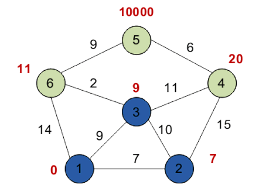

Лекція 5
Алгоритм Дейкстри
Після цієї лекції ви зрозумієте:
- як працює пошук найкоротшого шляху у зваженому графі;
- чому алгоритм не підходить для ребер з від'ємною вагою;
- як відновити сам маршрут після обчислення відстаней.
Коли використовують Дейкстру
Алгоритм Дейкстри знаходить найкоротші відстані від однієї стартової вершини до всіх інших вершин зваженого графа. Він працює коректно лише тоді, коли всі ваги ребер невід'ємні.
На кожному кроці ми обираємо невідвідану вершину з найменшою поточною міткою, після чого намагаємося покращити мітки її сусідів. Коли вершина обрана як мінімальна, її відстань вже вважається остаточною.
Основні кроки
- Початковій вершині присвоюють відстань 0, усім іншим - нескінченність.
- Позначають усі вершини як невідвідані.
- Обирають невідвідану вершину з мінімальною міткою.
- Оновлюють відстані до всіх її сусідів.
- Повторюють, доки не будуть опрацьовані всі вершини.
У слайдах є покроковий приклад для мережі з шести вершин, а також фрагмент реалізації на C++. Наприкінці демонструється відновлення самого шляху, а не лише значення відстані.

Приклад з презентації, на якому зручно показувати роботу алгоритму Дейкстри.
Зв'язок із редактором
У редакторі графів можна побудувати зважений граф, вибрати стартову вершину і відразу перевірити, як алгоритм Дейкстри знаходить найкоротші маршрути. Це зручно для практики і для самоперевірки після лекції.
- Чому Дейкстра не працює з від'ємними вагами?
- Що означає мітка вершини у процесі роботи алгоритму?
- Як відновити сам шлях після завершення обчислень?